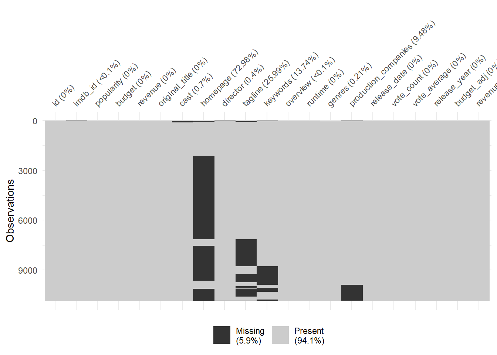
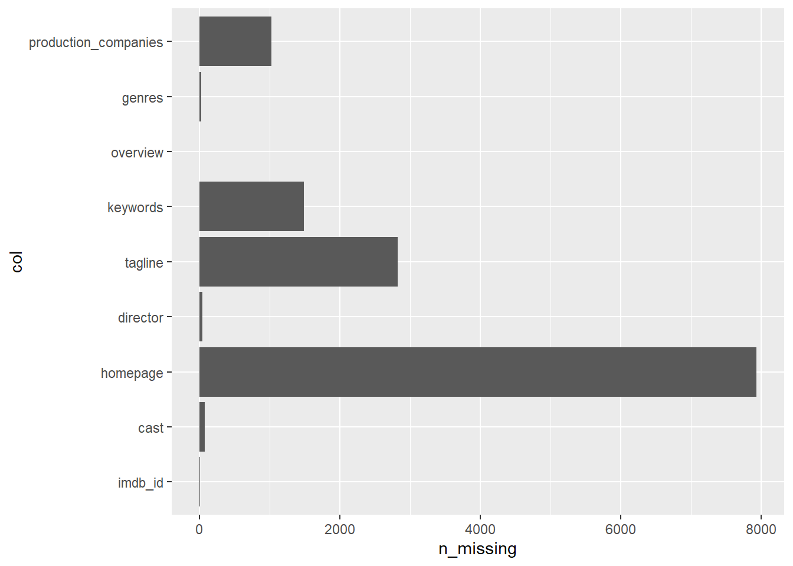
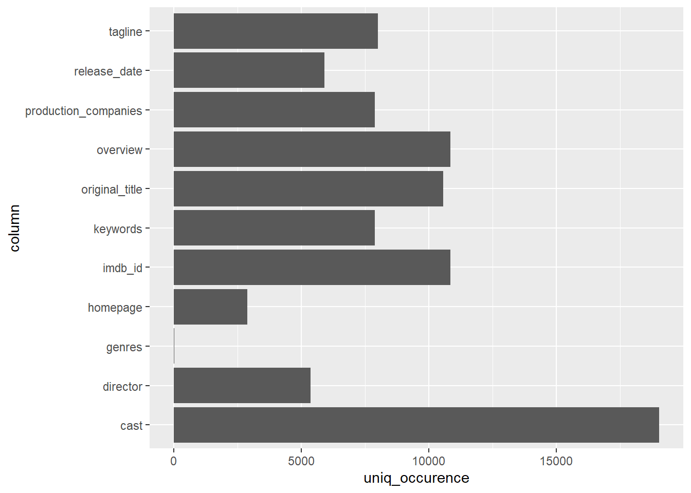

4 Analyse exploratoire des données
Dans cette partie nous cherchons à comprendre le jeu de données. Il sera également question de nettoyer le jeu de données afin de le préparer à l’analyse.
4.1 Qualité des données
Nous voulons avant toute chose nous assurer que le jeu de données
## [1] 10866 21# Aperçu de quelques colonnes
set.seed(1221) # Aléatoire
df_subset <- sample(df, 6)
knitr::kable(
head(df_subset)
)| original_title | imdb_id | revenue_adj | genres | director | release_date |
|---|---|---|---|---|---|
| Jurassic World | tt0369610 | 1392445893 | Action|Adventure|Science Fiction|Thriller | Colin Trevorrow | 6/9/15 |
| Mad Max: Fury Road | tt1392190 | 348161292 | Action|Adventure|Science Fiction|Thriller | George Miller | 5/13/15 |
| Insurgent | tt2908446 | 271619025 | Adventure|Science Fiction|Thriller | Robert Schwentke | 3/18/15 |
| Star Wars: The Force Awakens | tt2488496 | 1902723130 | Action|Adventure|Science Fiction|Fantasy | J.J. Abrams | 12/15/15 |
| Furious 7 | tt2820852 | 1385748801 | Action|Crime|Thriller | James Wan | 4/1/15 |
| The Revenant | tt1663202 | 490314247 | Western|Drama|Adventure|Thriller | Alejandro González Iñárritu | 12/25/15 |
4.2 Traitement des données manquantes
## [1] 13434Il y a un total de 13234 point manquants dans le jeu de données. Il se peut bien que la répartition des données manquantes diffèrent selon les colonnes. Nous allons vérifier cela.

L’image ci-dessus montre le nombre d’observations manquantes par colonnes dans le jeu de données. Sur l’ensemble du jeu de données, près de 6% des données sont manquantes. La colonne qui enregistre le plus de données manquantes est la colonnes homepage (avec 72% des données manquantes).
Il est aussi possible de compter le nombre des données manquantes par colonnes pour calculer individuellement leur pourcentage.
N_ROWS = nrow(df)
sapply(df, function(x) sum(is.na(x))) %>%
stack() %>%
rename(n_missing = values, col = ind) %>%
filter(n_missing > 0) %>%
ggplot(aes(x = col, y = n_missing)) +
geom_col() + coord_flip() Avant de décider la stratégie à adopter pour les données manquantes, présentons chacune de ces colonnes.
- La colonne production_companies : le studio de réalisation du film
- genres : Il s’agit de genre du film. Exemple drame, action …
- overview : Il s’agit d’un bref résumé du film
- keywords : ce sont les mots-clés associés au film
- tagline : ce sont phrases chocs pour la publicité du film
- director : le producteur du film
- homepage : c’est le lien vers la page d’accueil du film
- cast : Ce sont les listes des principaux acteurs du film
- imdb_id : C’est l’identifiant du film selon IMDB
Complétons cette liste de colonnes par les autres colonnes présentes dans le jeu de données :
- id : identifiant du film
- popularity : une mesure de la popularité du film attribuée par IMDB
- budget : le budget consacré à la réalisation du film, en dollars
- revenue : le revenu qu’a suscité le film.
- original_title : Titre original du film.
- runtime : la durée du film (en minute)
- release_date : la date de parution du film
- vote_count : le total des votes attribués au film
- vote_average : la moyenne des votes (sur 10)
- realease_year : année de sortie du film
Revenons donc au traitement des valeurs manquantes. Présentons les differentes stratégies pour traiter les données manquantes avec leurs avantages et incovénients :
- Supprimer les enregistrements qui contiennent les valeurs manquantes : cette stratégie est facile à mettre en place mais l’inconvénient est que faisant ainsi nous pouvons perdre beaucoup d’informations concernant le jeu de données. Voyons le nombre d’informations potentielles que nous pouvons perdre si adoptions cette stratégie.
## [1] 8874Nous perdrons plus de 8874 observations dans le jeu de données. Une stratégie alternative serait par exemple de supprimer uniquement les colonnes qui contiennent le plus de valeurs manquantes et conserver celles qui ont en que peu.
En général la stratégie de supprimer les observations manquantes ne marche pas bien car il est possible de perdre beaucoup d’informations. Nous allons plutôt nous focaliser sur les stratégies d’imputations des valeurs manquantes.
Imputer des valeurs manquantes consiste à utiliser une stratégie qui dévine au mieux la valeur manquante dans la colonne.
Pour une colonne numérique et continue, par exemple nous pouvons remplacer chaque valeur manquante par la indicateurs de distributions telles que la moyenne, la médiane ou encore le mode. Pour une colonne catégorique, nous pouvons par exemple remplacer la valeur maquante par la valeur ayant la plus grande fréquence (le mode de la distribution). Toutes ces stratégies n’ont en réalité qu’un seul but : réduire la perte d’information et préserver au mieux la vraissemblance de la distribution.
Toutefois il existe des solutions plus sophistiquées plus imputer les valeurs manquantes. Ces solutions utilisent pour la plupart des algorithmes de Machine Learning et sont plus performantes; l’avantage des méthodes d’imputations de Machine Learning est qu’elles simulent la distribution des valeurs dans un espace à N dimensions alors que les méthodes d’imputation classique n’utilisent qu’une seule dimension qui est celle de la colonne.
Là où une imputation par la moyenne remplace la valeur manquante par la moyenne de la colonne, une imputation utilisant le Machine Learning (par exemple K-Nearest Neighbors) va remplacer la valeur manquante par la moyenne de K individus dont la distance euclidienne dans N dimensions est la plus faible. Cela fait donc que la vraissemblance de la valeur prédite est plus haute.
4.3 Imputation des valeurs manquantes
Nous allons maintenant imputer les valeurs manquantes. Toutefois à l’issue de la description que nous avions faite des colonnes, il existe des colonnes qui n’ont réellement pas de valeurs dans la prédiction des données et certaines colonnes dont imputer des valeurs n’aurait pas de sens. Les colonnes id et id_imdb ne sont que des identifiants utilisés pour distinguer les films, nous pouvons les supprimer sans risque de perdre des informations.
Imputer la colonne homepage par le mode ne fait aucun sens car chaque film est unique et a forcément sa page d’accueil. Il serait plus intelligent de remplacer les valeurs manquantes par “Inconnu” car après tout cette information nous est inconnue. Nous verrons plus tard comment transformer cette colonne en un élement plus intéressant.
Similairement les colonnes production_companies, director, cast, taglines, overview sont uniques à chaque film, la chance de se tromper si on utilise de l’inférence pour remplacer les valeurs manquantes qu’elles contiennent est très grande. Donc il serait nécessaire de les remplacer aussi par “Inconnu”.
Nous allons faire une copie du jeu de données. Cette sur cette copie que nous appliqueront les imputations.
txt_columns <- select_if(df, is.character) %>% colnames()
num_txt_columns <- length(txt_columns)
unique_occurences <- vector(mode = "numeric", length = num_txt_columns)
for (txt_col in txt_columns){
unique_occurences[txt_col] <- separate_rows(df, col = txt_col, sep = "[|]") %>%
pull(!!txt_col) %>% unique() %>% length()
}
df_uniq_col_occurences <- unique_occurences[unique_occurences > 0] %>% data.frame() %>%
tibble::rownames_to_column()
colnames(df_uniq_col_occurences) <- c("column","uniq_occurence")
ggplot(df_uniq_col_occurences, aes(x = column, y = uniq_occurence)) +
geom_col() + coord_flip()
Nous observons à partir de ce graphique que lorsque nous élargissons les niveaux des colonnes textuels le nombre des dudits niveaux sont trop nombreux à l’exception de la colonne genres qui en a très peu. Si nous décidons d’étendre ces niveux pour devenir des colonnes alors le nombre de colonnes dépassera forcément le nombre d’observations et le temps de calcul risque d’être très grand. Nous allons tout simplement les effacer du jeu de données.
Nous pouvons également exploiter la colonne release_date pour n’extraire que les mois de l’année car nous savons qu’une année n’a que 12 niveaux.
ready_df <- df %>%
select(-c(id, tagline, production_companies, overview,
original_title, keywords, imdb_id, homepage, director, cast))
# Transformons les niveaux de la colonne genre en plusieurs colonnes binaires
ready_df <- separate_rows(ready_df, col = "genres" , sep = "[|]") %>%
distinct() %>%
mutate(dummy = 1) %>%
spread(key = "genres", value = dummy, fill = 0)
# Transformons les mois de sortie des films en colonnes binaires
ready_df <- ready_df %>%
mutate(release_date = as.Date.character(ready_df$release_date, format = "%m/%d/%y"),
month = months(release_date)) %>%
mutate(dummy = 1) %>%
spread(key = "month", value = dummy, fill = 0)
# Supprimer la colonne NA
ready_df <- select(ready_df, -c("<NA>", "release_date"))| janvier | mars | novembre | Comedy | Mystery | TV Movie |
|---|---|---|---|---|---|
| 0 | 0 | 0 | 0 | 0 | 0 |
| 0 | 0 | 0 | 0 | 0 | 0 |
| 0 | 1 | 0 | 0 | 0 | 0 |
| 0 | 0 | 0 | 0 | 0 | 0 |
| 0 | 0 | 0 | 0 | 0 | 0 |
| 0 | 0 | 0 | 0 | 0 | 0 |
Les deux transformations ue nous venons d’appliquer sur le jeu de données initial (étendre les niveaux de la colonne genres et ceux de la colonne release_date transformée en data) font que dès maintenant le jeu de données contient 43 colonnes en total.
L’idée pour le reste du travail à venir est de réduire les dimensions du jeu de données par une opération de diagonalisation du genre l’Analyse en Composante Principale (ACP) en vue d’approfondir notre connaissance du jeu de données.
Le bloc de code suivant vérifie que le jeu de données ne contient plus aucune valeur manquante et le prépare à être utilisé dans une ACP.
## [1] 0Les transformations que nous avions appliquées sur le jeu de données ont permis d’enlever les valeurs manquantes. Rappellons que les valeurs manquantes se concentraient principalement dans les colonnes non-numériques avec le plus grand ratio étant celui de la colonne homepage.
4.4 L’Analyse en composantes principales
Les résultats de l’ACP sont enregistrés dans la variable acp créée pour cet effet. Nous voulons maintenant observer et interpréter les résultats afin d’avoir une large compréhension du jeu de données.
Il est possible d’imprimer les résultats de l’ACP sur l’écran grâce à la fonction summary() mais procéder ainsi ne nous sera pas d’une grande utilité. Il est plus intéressant de visualiser ces résultats. C’est ce que nous ferons dans la partie visualisation.